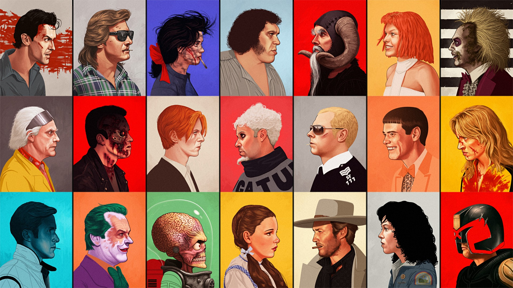

Welcome to the Endgame!
Oh that was quite ominous, wasn't it? I'll tone it down. I hope you enjoyed yourself with either the unsupervised learning narrator or the causal analysis narrator.
What did we learn from those two chapters in the quest to answer our all important question:
From the Unsupervised Learning chapter, we observed that our data, even without labels, tends to cluster together. We were able to identify 3 clusters of interest that we aptly named C2, C3 and C4. The most distinct one was C2, that was represented, in majority, by women.
We also identified the tropes best represented in each cluster.
If we focus on C2 for example, we observed that the tropes shallow_and_popular, emotional_damage and dumb_and_clumsy were mainly represented in this cluster.
Looking at our Causal Analysis chapter, we were able to identify the statistically significant features for some of our tropes.
These results match what we found in Unsupervised Learning, for example the actor's gender was an important and significant feature for the shallow_and_popular trope.
So in all in all, what does this mean in regards to our main question?
Sadly, we can't give you a list of specific features that perfectly define each trope but isn't better that way? Wouldn't cinema be extremely boring if actors were typecast, forced to play a role based on their physical features? Isn't the ability of an actor to flow from role to role what makes the beauty of acting?
But then again... we weren't so far off the mark either.
We did find that some features could suggest an actor cast in a specific role, take the shallow_and_popular trope for example.
Maybe our story doesn't stop here...
We had a very limited dataset and we only identified a small number of features, compared to all the information humans process to characterize each other.
Our limited results suggest that there's more than meets the eye regarding typecasting and if we had a more extensive dataset, in terms of number of characters and features, we could perhaps come to a more conclusive answer.
But for now, we will have to end to journey here. Thank you for joining us in this deep dive in the world of actors, their physical features and character tropes. I have to go join the other narrators now. We're trying to settle the debate of which character trope the unsupervised learning narrator would play.
Toodle-oo and... Happy Holidays! 